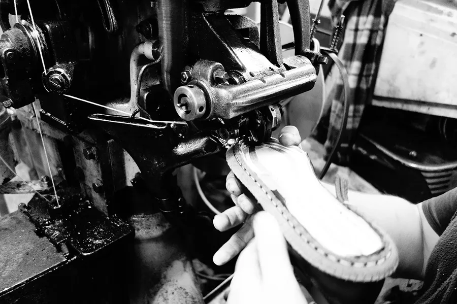
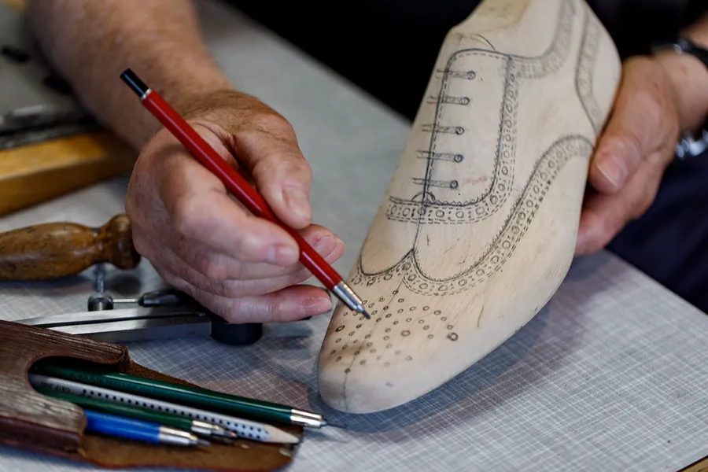

Rahmengenäht · Graz · seit 2008
Ihr Schuh, so einzigartig wie sein Anlass.
Rahmengenähte Schuhe aus geprüftem italienischem Leder, in bis zu 250 Arbeitsschritten von Hand gebaut. Fertig zum Bestellen oder ganz nach Maß.
Zum Drehen ziehen
Der Shop
Fünf Kategorien, ein Handwerk
Vom formellen Oxford bis zum Gürtel. Jedes Modell hat seine eigene Seite mit Foto, Beschreibung und Größen.


Ausgewählt
Vier Modelle, die das Haus ausmachen
Vom Hirschleder-Onecut bis zum Schnürboot aus geöltem Pullup-Leder. Ein Querschnitt durch das, was die Manufaktur kann.


Das Handwerk
Rahmengenäht, nicht verklebt.
Etwa 90 Prozent aller Schuhe werden industriell verklebt. Ein rahmengenähter Schuh braucht bis zu 250 Arbeitsgänge und viel handwerkliches Geschick. Das Oberteil wird flexibel mit dem Boden vernäht, nicht starr verklebt. Das macht den Schuh langlebig und reparierbar.
Wie ein Schuh entsteht
Nach Maß
Ihr Modell in zwei Fragen finden
Sagen Sie uns Anlass und Jahreszeit, wir schlagen Ihnen drei Modelle vor. Danach stellen Sie den Schuh im 3D-Konfigurator zusammen und drehen ihn mit der Maus. Aus rund 200 Lederarten entsteht Ihr Unikat.
Schuh-Berater starten